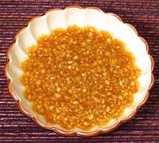

|
Spring Roll Dipping Sauce #2Vietnam | ||||
| Makes: Effort: Sched: DoAhead: |
10 oz ** 20 min Best |
This dipping sauce for spring rolls is fairly robust in flavor but with a moderate chili bite. Adjust for more or less as you wish. For a Thai style sweet and sour sauce see Spring Roll Sauce #1. | |||
|
1/4 1 1/3 1/2 1 |
c T c c t |
Garlic Palm Sugar Lime Juice Fish Sauce Chili Powder (1) |
Make: - (20 min)
|